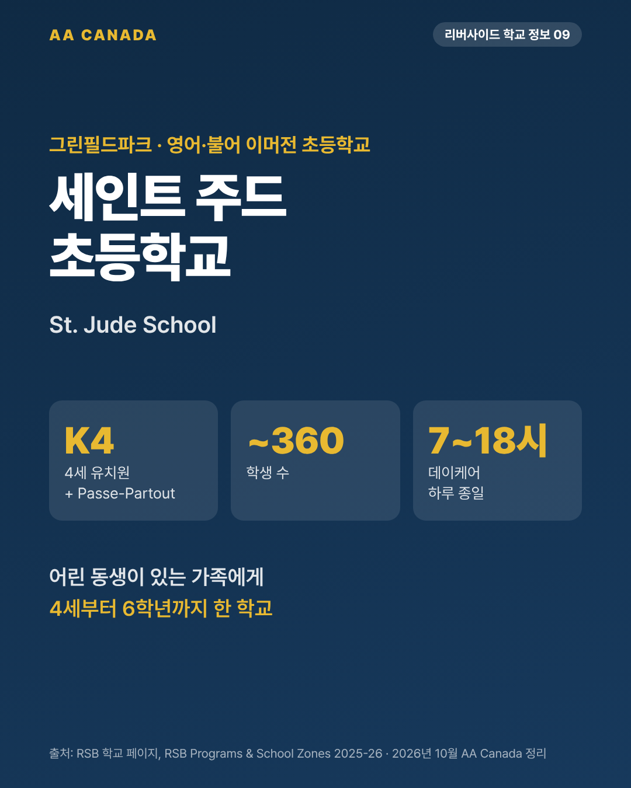

기준일 2026-10-21 · AA Canada 정리 교육청 공통 정보는 리버사이드 교육청 공통 안내를 보세요.
한 줄 요약: 그린필드파크의 영어·불어 이머전 초등학교. 4세 유치원과 Passe-Partout까지 있어 어린 동생이 있는 가족에게 좋습니다. 데이케어가 아침 7시부터 저녁 6시까지 열립니다.
| 항목 | 내용 |
|---|---|
| 주소 | 781 Miller Street, Greenfield Park (Longueuil), QC J4V 1W8 |
| 연락처 | 450-672-2090 · stjude@rsb.qc.ca |
| 학년 | 4세 유치원(K4)~6학년 |
| 학생 수 | 약 360명 |
| 교장 | Michael Brown (교감 Jennifer Drake) |
| 수업 시간 | 8:55~15:35 |
| 데이케어 | 7:00~18:00 (담당 450-672-1048) |
| 프로그램 | 영어 프로그램 + 불어 이머전 (둘 다 K4부터), Passe-Partout(4세 부모 참여 프로그램) |
| 학군 | 그린필드파크, 브로사드 일부(P·V·T 구역 등), 생위베르 Laflèche, 라프레리 일부 |